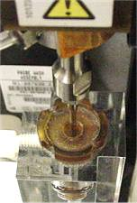
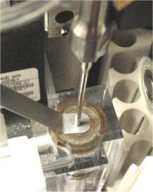

Alignment: Pipettor to Wash Tower
-
Wash Tower X alignment
Perform these steps to align the Pipettor to the Wash Tower X location.
-
In the Mechanics screen select
Pipettor as the device and choose
Wash Tower as the position, and then press
Move X to Position.
Note: If the pipettor was not made the selected device, then the function buttons may appear disabled.
-
Remove the interlock switch key to disable the Pipettor motors, rotate the drive at the left end of the gantry to manually move the Pipettor downward until the probe is into the Wash Tower, and then reinsert the interlock switch key.

Note: Make sure the Pipettor does not move left or right when moving it down. - Use the directional keys to adjust the probe X-Axis into alignment with the inside of the Wash Tower nozzle.
- Check the alignment of the Pipettor to the wash tower in the front to back "Y" axis. If the front to back alignment is not correct, then loosen the two Wash Tower mounting bolts, align the Wash Tower, and secure the screws. Realign the Pipettor in the X and Z axis after moving the wash tower.
- Press Save Offset to save the new offset values.
-
In the Mechanics screen select
Pipettor as the device and choose
Wash Tower as the position, and then press
Move X to Position.
-
Wash Tower Z alignment
Perform these steps to align the Pipettor to the Wash Tower Z location.
- In the Mechanics screen make the Pipettor the Selected Device, choose Wash Tower as the position, Home the Pipettor, and then press Move Z to Position.
-
Insert a bent 0.010 inch feeler gauge between the probe and the top inside surface of the Wash Tower nozzle, then use the directional keys to adjust the probe Z-Axis to the correct height.

- Press Save Offset to save the new offset values
Go back to the parent topic to perform any other necessary alignments and for verification steps once all alignments are complete.